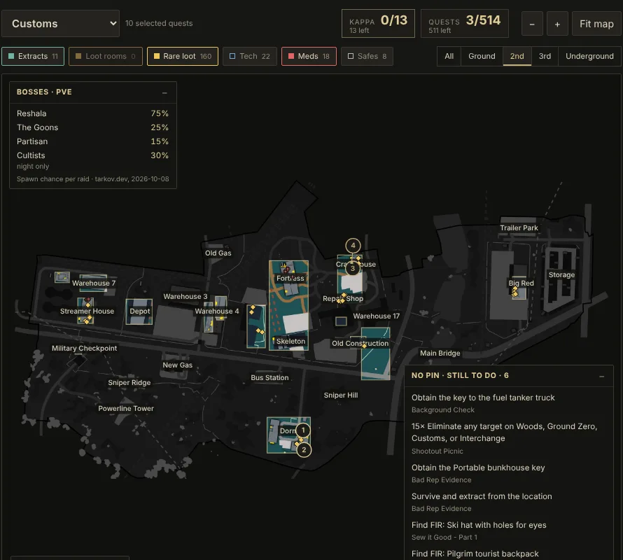

The map tells you what's on each floor
Pick a floor and everything else greys out. Turn on extracts, rare loot, tech, meds or safes. Boss spawn chances sit in the corner, and objectives without a pin stay listed so you don't forget the kill counts.